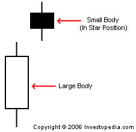

1. A type of candlestick formation that is identified when a small bodied-candle is positioned above the price range of the previous candle as a result of a gap in the underlying assets price.
2. One of the four categories (quadrants) of the BCG growth-share matrix that represents the division within a company that has a large market share in a rapidly expanding industry.
1. Small bodied candles in the star position often suggest that market participants are becoming indecisive and that the strength of the current trend could be reversing. For a valid star pattern, most traders will watch for small bodied candles to follow a large bodied candle because this setup generally leads to a higher probability of a true trend reversal than when the body of the first candle is small.
2. A star requires investment capital to expand continually within a fast growing industry, thus maintaining its advantage. Should the industry mature with the star positioned as a leader, the star will transform into a cash cow.
{kind=link}